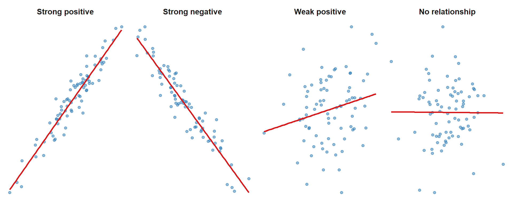

set.seed(42)
n <- 80
d1 <- data.frame(x = rnorm(n), y = 0.8*rnorm(n, mean=0) + rnorm(n,sd=0.5),
type = "Strong positive")
d1$y <- d1$x * 0.9 + rnorm(n, sd=0.3)
d2 <- data.frame(x = rnorm(n), y = -0.9*rnorm(n) + rnorm(n,sd=0.3),
type = "Strong negative")
d2$y <- -d2$x * 0.9 + rnorm(n, sd=0.3)
d3 <- data.frame(x = rnorm(n), y = 0.4*rnorm(n) + rnorm(n,sd=0.9),
type = "Weak positive")
d3$y <- d3$x * 0.3 + rnorm(n, sd=0.9)
d4 <- data.frame(x = rnorm(n), y = rnorm(n),
type = "No relationship")
all_d <- rbind(d1, d2, d3, d4)
all_d$type <- factor(all_d$type,
levels = c("Strong positive","Strong negative",
"Weak positive","No relationship"))
ggplot(all_d, aes(x = x, y = y)) +
geom_point(alpha = 0.5, color = "#2c7bb6", size = 1.5) +
geom_smooth(method = "lm", se = FALSE, color = "#d7191c",
linewidth = 1, formula = y ~ x) +
facet_wrap(~ type, nrow = 1, scales = "free") +
theme_minimal(base_size = 12) +
theme(axis.text = element_blank(),
axis.ticks = element_blank(),
axis.title = element_blank(),
panel.grid = element_blank(),
strip.text = element_text(face = "bold", size = 11))